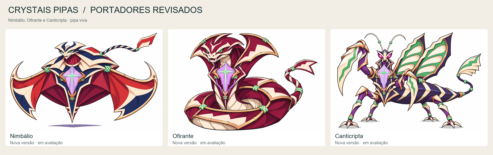
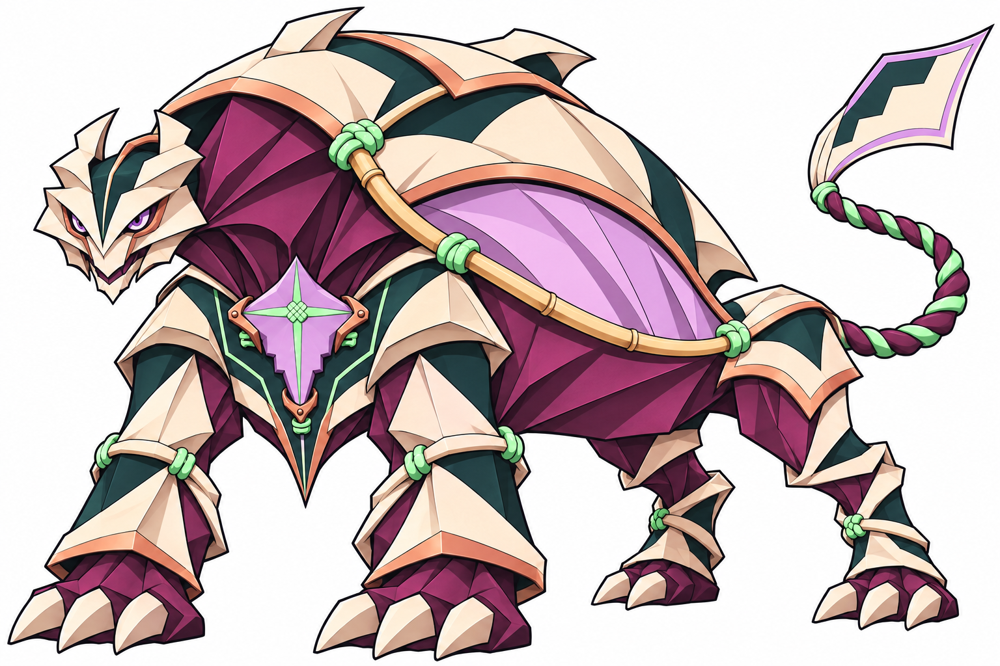
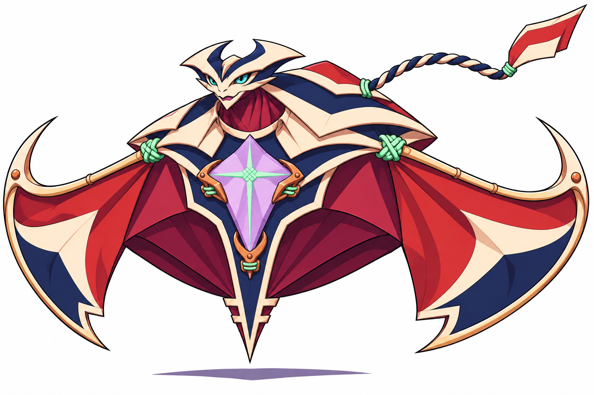
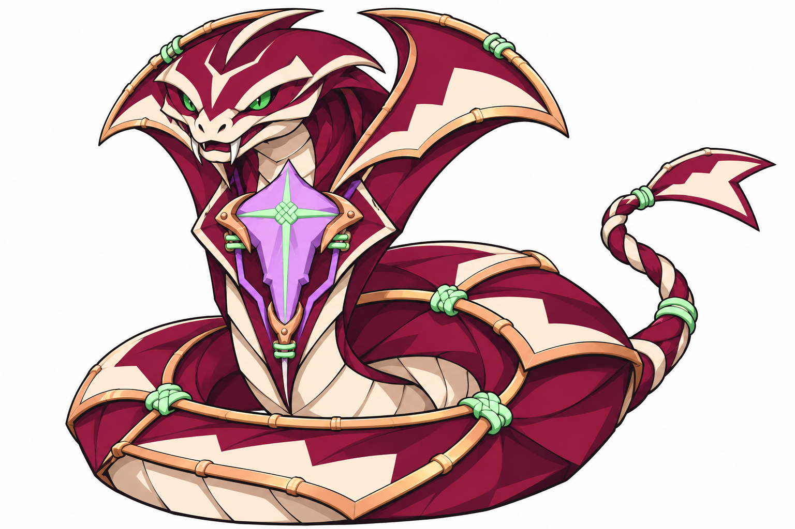
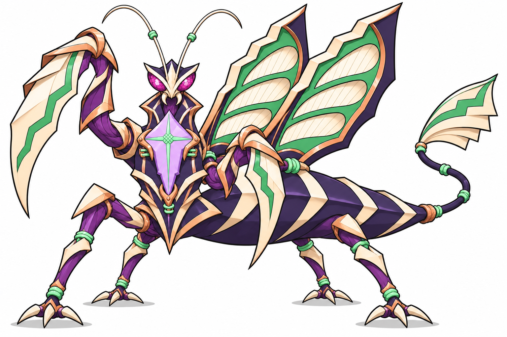

Revisões de pipa viva de 07.11.2026 — incluindo Trancoura
Crystais Pipas
Sete portadores propostos, sem fixar o tamanho final do grupo. Cada corpo possui função, anatomia e armadura próprias; cristal e encaixe formam a assinatura ancestral.

Ver os três portadores inspirados em lendas: Grifarca, Gevoraz e Makaréu

Vesperálito
Quadrúpede de ombros em arco e quatro apoios.
Verbo proposto: conter. Olhos violeta.
Brief
Nimbálio
Aéreo, sem patas, com duas grandes membranas laterais.
Verbo proposto: conduzir correntes. Olhos ciano.
Brief
Ofirante
Serpentino sem membros, tronco em espiras e placas que acompanham a curva.
Verbo proposto: redirecionar força. Olhos verde-esmeralda.
Brief
Canticripta
Insetoide de seis membros: quatro patas e dois braços raptoriais; dois painéis dorsais.
Verbo proposto: afinar e interromper vibrações. Olhos magenta.
BriefDefinido pelo autor e propostas · Revisão dos novos portadores · Índice documental
Concepts com fundo branco, sem rig ou integração. Galeria de artes estáticas; não prova de movimento.